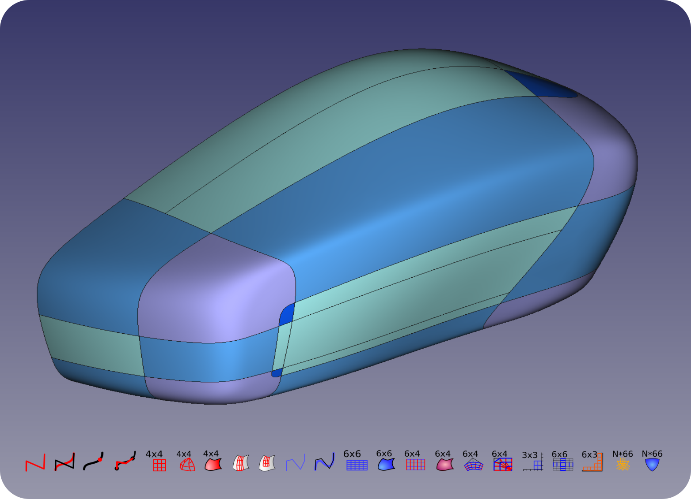
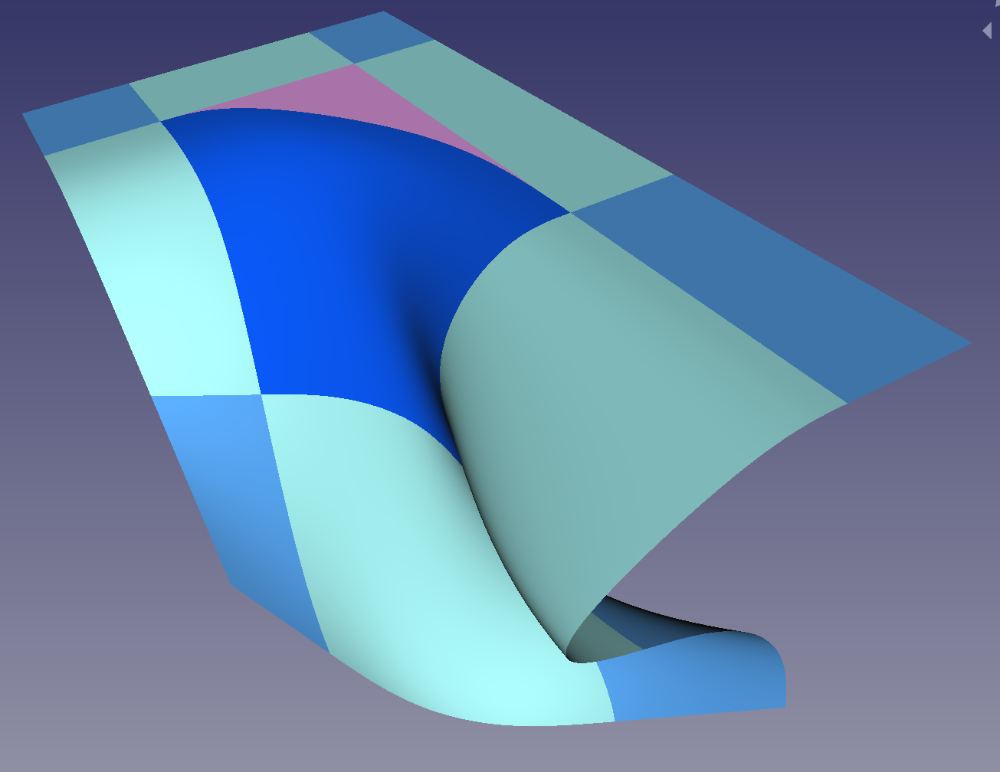
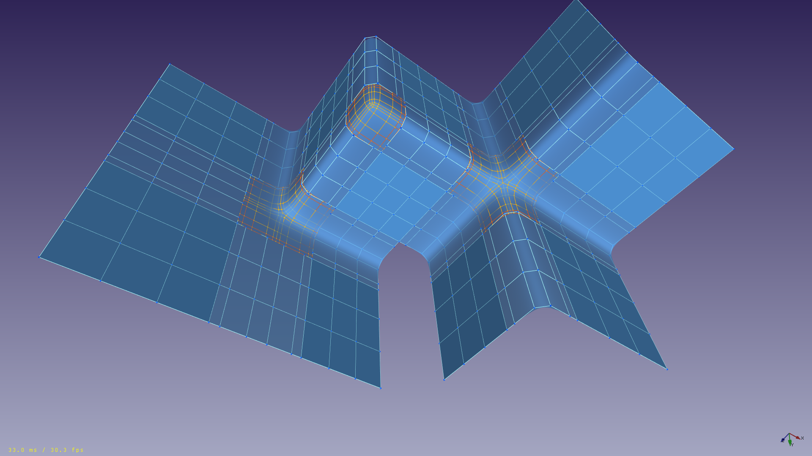
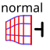
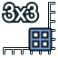

Silk Workbench
This documentation is not finished. Please help and contribute documentation.
GuiCommand model explains how commands should be documented. Browse Category:UnfinishedDocu to see more incomplete pages like this one. See Category:Command Reference for all commands.
See WikiPages to learn about editing the wiki pages, and go to Help FreeCAD to learn about other ways in which you can contribute.
Introduction
The Silk Workbench is an external workbench that creates NURBS surfaces in FreeCAD. Silk is the new name of the NURBSlib_EVM project, and provides NURBS surface modeling tools focused on low degree and seam continuity.
Description
A NURBS is a smooth curve or surface whose form is controlled by a relatively small number of control points, which float close to the curve or surface without lying on it. As their name indicates, control points are what the user manipulates to control the curve or surface. The "refinement" of a NURBS is controlled by its degree, and the "distance of effect" of a control point is controlled by the knot vector of the NURBS.

A complex surface model built entirely with Silk Workbench's NURBS tools
Low degree: Silk NURBS curves and surfaces use the minimum degree suitable for the intended goal, and knot vectors are kept to a small, consistent set. With most NURBS modeling problems, the apparent solution is to increase the degree and number of knots — while perfectly valid, this raises both the computational difficulty and the organizational challenge of managing control points. Silk aims to provide tools of the lowest mathematical complexity for each problem it solves.
Seam continuity: Silk's goal is to allow complex models to be built from individual NURBS sections — either by creating new surfaces that are continuous with existing ones, or by providing tools to create smooth transitions where surfaces were initially created with discontinuities.
FreeCAD does the heavy lifting:
- Providing a planar sketch interface that can be located anywhere in 3D space, to manipulate simple groups of very few control points (Silk can use multiple sketches in different planes to construct truly 3D curves and surface edges).
- Drawing the smooth surfaces once the appropriate control grids have been prepared using Silk tools.
Silk Workbench merely provides methods for combining these simple sketches into control point grids, which FreeCAD then converts into NURBS surfaces.

A single continuous surface folded like a handkerchief, demonstrating seam continuity across a fold

Four base surfaces blended across a shared corner using Silk Workbench's N-star blending tools
Limitations
Although Silk Workbench is intended to provide efficient and user-friendly tools in the long term, at this time it behaves more like a low-level library with GUI access to its functions. Individual functions create individual document objects, and in the future, relevant functions might be chained together automatically to create complex nested objects. The current objects are very likely to persist, both as individual document objects and as sub-objects in the future.
Modeling can be done in the current state, and the resulting data structures are efficient, but the process can be laborious. The best path forward for user-friendliness will depend heavily on the outcome of several debates within the FreeCAD community on how parts, solid bodies, assemblies, and object linking are organized.
In the meantime, Silk does offer a few tools not otherwise available in FreeCAD (e.g. 3D splines), and can in general be seen as a sandbox for surface design, control strategies, data structures, and algorithms.
Tools
Sketches
Sketches are the fundamental control elements of Silk curves and eventually Silk surfaces, see  Sketcher workbench for information about sketch tools and their general usage. Keep in mind to use the
Sketcher workbench for information about sketch tools and their general usage. Keep in mind to use the  New Sketch command of the Sketcher workbench to create sketches, not its PartDesign counterpart.
New Sketch command of the Sketcher workbench to create sketches, not its PartDesign counterpart.
- Silk Sketches: A page dedicated to use cases of sketches in the Silk environment.
Silk Tools
The Silk tools are all located in the Silk menu and the Silk Commands toolbar that appear when you load the Silk Workbench.
 ControlPoly4: Creates a ControlPoly4 from a variety of inputs.
ControlPoly4: Creates a ControlPoly4 from a variety of inputs. CubicCurve_4: Creates a CubicCurve_4 from a ControlPoly4.
CubicCurve_4: Creates a CubicCurve_4 from a ControlPoly4. Point_onCurve: Creates a point on a CubicCurve_4 or CubicCurve_6 (also works on some curves outside of Silk).
Point_onCurve: Creates a point on a CubicCurve_4 or CubicCurve_6 (also works on some curves outside of Silk). ControlPoly4_segment: Creates a ControlPoly4 for a segment of a CubicCurve_4, between two points on the curve.
ControlPoly4_segment: Creates a ControlPoly4 for a segment of a CubicCurve_4, between two points on the curve. ControlGrid44: Creates a ControlGrid44 from four connected ControlPoly4 edges. (see also ControlGrid44 below)
ControlGrid44: Creates a ControlGrid44 from four connected ControlPoly4 edges. (see also ControlGrid44 below) ControlGrid44_Rotate: Creates a ControlGrid44 from three ControlPoly4 edges. (see also ControlGrid44_Rotate below)
ControlGrid44_Rotate: Creates a ControlGrid44 from three ControlPoly4 edges. (see also ControlGrid44_Rotate below)- ControlGrid44_flow: Creates a ControlGrid44_flow from a ControlGrid44. (see also ControlGrid44_flow below)
- CubicSurface_44: Creates a cubic surface from a ControlGrid44. (see also CubicSurface_44 below)
- ControlGrid44_EdgeSegment: Creates a ControlGrid44 from a CubicSurface_44 and one CubicCurve_4 segment. (see also ControlGrid44_EdgeSegment below)
- ControlGrid44_2EdgeSegments: Creates a ControlGrid44 from a CubicSurface_44 and two CubicCurve_4 segments. (see also ControlGrid44_2EdgeSegments below)
 ControlPoly6: Creates a ControlPoly6 from various inputs. (see also ControlPoly6 below)
ControlPoly6: Creates a ControlPoly6 from various inputs. (see also ControlPoly6 below) CubicCurve_6: Creates a CubicCurve_6 from a ControlPoly6. (see also CubicCurve_6 below)
CubicCurve_6: Creates a CubicCurve_6 from a ControlPoly6. (see also CubicCurve_6 below) ControlGrid66: Creates a ControlGrid66 from four connected ControlPoly6 edges. (see also ControlGrid66 below)
ControlGrid66: Creates a ControlGrid66 from four connected ControlPoly6 edges. (see also ControlGrid66 below)- CubicSurface_66: Creates a CubicSurface_66 from a ControlGrid66. (see also CubicSurface_66 below)
- ControlGrid64: Creates a ControlGrid64 from two ControlPoly4 and two ControlPoly6 objects matching on opposite edges. (see also ControlGrid64 below)
- CubicSurface_64: Creates a CubicSurface_64 from a ControlGrid64 of any type. (see also CubicSurface_64 below)
- ControlGrid64_2Grid44: Creates a ControlGrid64_2Grid44 from two ControlGrid44 objects that share a corner. (see also ControlGrid64_2Grid44 below)
- ControlGrid64_3_1Grid44: Creates a ControlGrid64_3_1Grid44 from a ControlGrid44 selected by one of its corner vertices.(see also ControlGrid64_3_1Grid44 below)

ControlGrid64_normal:- ControlGrid64_Surf44: Creates a ControlGrid64_Surf44 from a CubicSurface_44.

SubGrid33_2Grid64: (see also SubGrid33_2Grid64 below)- ControlGrid66_4Sub: (see also ControlGrid66_4Sub below)
 SubGrid63_2Surf64: Creates a SubGrid63 sub-grid from two CubicSurface_64 surfaces.
SubGrid63_2Surf64: Creates a SubGrid63 sub-grid from two CubicSurface_64 surfaces. ControlGridNStar66: Creates a ControlGridNStar66 from three or more SubGrid63_2Surf64 objects.
ControlGridNStar66: Creates a ControlGridNStar66 from three or more SubGrid63_2Surf64 objects. CubicNStarSurface_NStar66: Creates a CubicNStarSurface_NStar66 from a ControlGridNStar66.
CubicNStarSurface_NStar66: Creates a CubicNStarSurface_NStar66 from a ControlGridNStar66.- StarTrim_CubicNStar: Creates a StarTrim_CubicNStar object from a CubicNStarSurface_NStar66 object.
 SilkPose: Creates a SilkPose object, a support with a 3D placement calculated from linked references, intended to attach sketches.
SilkPose: Creates a SilkPose object, a support with a 3D placement calculated from linked references, intended to attach sketches.- Reload_Silk: Reloads the Silk workbench (specifically, just its core library) without exiting FreeCAD, after making code changes.
Workflow
The individual tool of the Silk workbench on their own are quite easy to use and only require a brief description. The hard part is to organize the model tree in a way to be able to handle the huge amount of simple objects instead of losing control. See the author's video tutorials published on the forum (find the link in the References)
Basic Workflow
- The idea is to start with modeling a structure of simple support surfaces, the primary surfaces, and their edge curves, the primary curves as a first step.
- Now each primary curve is "split" into 3 curve segments, two corner segments and one middle segment in between. These are used to "split" 5 segments from the primary surface, one in the center, the portion of the primary surface, the center surface (restored surface in the tutorial), that is kept, and four edge grids to blend.
- Pairs of adjacent edge grids to blend are combined into a blended edge grid and finally a blended edge surface.
- Finally the gaps surrounded by the blended grids and surfaces are filled with corner blend grids and finally corner blend surfaces
Primary Surfaces
Primary surfaces are 4x4 surfaces that create the raw shape before blending.
- Create one control sketch for each curved edge of the primary surface.
- Create a control polygon from each sketch, and a few more between pairs of corner vertices for straight edges.
- Create control grids from loops of 3 or 4 control polygons.
- If necessary create smoother Silk ControlGrid44_flow grids.
- Create primary surfaces from the grids.


Sketches → Control polygons for curved edges → Control polygon for straight edges added → 4x4 control Grids → Flow variant control grids → Primary 4x4 surfaces
Primary Curves
Primary curves are cubic curves representing the edge curves of the primary surfaces. They are created from the same control polygons as the control grids of the surface.
- Create one primary curve from each control polygon.


Control polygons → Primary curves → Primary curves and surfaces
Curve Segments
3 curve segments, determined by 4 points, are placed on the primary curves. Since splitting curves is not (yet) implemented, new segment polygons and curve segments that match exactly with their underlying primary curve are created between each pair of points. The middle segment controls the area of the primary surface along the curve that will not change. (For clarity, a different color is applied on the outer corner segments)
- Create 4 points on a primary curve, one start point, one end point, and two cut points in between.
- Create 3 segment polygons:
- One between the start point and its neighboring cut point.
- One between both cut points.
- One between its neighboring cut point and the end point.
- Create one curve segment from each segment polygon (and apply a different color on the corner segments).


Primary curves and surfaces → Points on curves added → Segment polygons replaced primary curves → Curve segments replaced segment polygons → Primary surfaces and curve segments
Sub-Surfaces
As curves, surfaces cannot be split, instead matching 4x4 grids and 4x4 sub-surfaces are added on a support surface.
Center Surfaces
In this case the center grid (grid to restore) and the center surface (restored surface), representing the area to be kept, are obtained from a primary surface in connection with 2 middle segments on two adjacent edges of the surface.
- Create a 4x4 center grid from:
- One primary surface.
- One of its related middle segments.
- Another of its related middle segments on an adjacent edge.
- Create a 4x4 center surface from the center grid


1 primary surface and 2 middle segments selected → Center grid on its support surface → Center surface on its support surface → One center surface on each support surface
Edge Grids
Related edge grids are obtained from the same surface in connection with 1 inner and 1 outer corner curve segment on two adjacent edges of the surface.
- Create a 4x4 edge grid from:
- One primary surface.
- One of its related middle segments.
- One of its related corner segments on an adjacent edge.


1 primary surface, 1 middle segment, and 1 corner segment selected → Edge grid on its support surface → All 4 possible edge grids on each support surface
Recent Alternative
It is now also possible to create the center grid and all 4 edge grids in one operation using the same tool:
- Create a 4x4 edge grid from:
- One primary surface.
- All 3 of its related curve segments on one edge.
- All 3 of its related curve segments on an adjacent edge.


1 primary surface and 2x 3 curve segments selected → Edge grid on its support surface → 1 center grid and 4 edge grids on each support surface → 1 center surface and all 4 surrounding edge grids on each support surface
Blended Edge Surfaces
Two adjacent 4x4 edge grids can be combined into a 6x4 blended edge grid which is used to create a 6x4 blended edge surface:
- Create a 6x4 blended edge grid from 2 adjacent edge grids.
- Create a blended edge surface from the blended edge grid.


Center surfaces and surrounding edge grids → Center surfaces and a pair of adjacent edge grids → 1 blended edge grid replaced both edge grids → Center surfaces with all 12 possible blended edge grids → Center surfaces with blended edge surfaces from the blended edge grids, and the remaining edge grids
Corner Blend Surfaces
The workflow to create a corner blend surface depends on the number of blended edge surfaces surrounding the corner gap; 4 in this example.
Corner Blend Between 4 Blended Edges
Two 6x4 blended edge grids meeting at a single point are used to create a 3x3 corner sub-grid, and 4 corner sub-grids are combined into one 6x6 blended corner grid that is used to create a 6x6 blended corner surface:
- Create 4 corner sub-grids from 2 blended edge grids each, belonging to the same primary surface.
- Create a blended corner grid from 4 corner sub-grids surrounding the same gap.
- Create a blended corner surface from the blended corner grid.


Center surfaces and blended edge grids → Center surfaces and 2 blended edge grids → 1 corner sub-grid added → 4 corner sub-grids belonging to the same gap → 1 blended corner grid replaced the 4 corner sub-grids


Center surfaces with blended edge grids, and all 4 yet possible blended corner grids → Blended corner surfaces replaced the blended corner grids → Center surfaces with blended edge and corner surfaces, and the remaining edge grids
Corner Blend Between 3, 5, or 6 Blended Edges
Two 6x4 blended edge grids sharing a point are used to create a 6x3 corner sub-grid, and 3, (4), 5, or 6 corner sub-grids are combined into one N6 blended corner grid that is used to create a 6x6 blended corner surface:
- Create 3 to 6 6x3 corner sub-grids from 2 blended edge surfaces each.
- Create an N6 blended corner grid from 3 to 6 corner sub-grids surrounding the same gap.
- Create a blended corner surface from the blended corner grid.


Center surfaces with blended edge surfaces → 1 corner sub-grid added → All 6 corner sub-grids added → 1 N6 blended corner grid added → Center surfaces with blended edge surfaces and 1 N6 blended corner surface that replaced the grids
Handling Curves
In contrast to other applications Silk surfaces seem to be derived from polygons instead of curves, but their edge curves are calculated in the background. To make them visible as separate objects Silk provides 2 tools:
- The CubicCurve_4 tool creates a cubic curve from a 4 node control polygon, and it is used for primary curves and curve segments.
- The CubicCurve_6 tool creates a cubic curve from a 6 node polygon.
Curve Set
Each primary surface supports nine surface segments and curve segments control the layout. To extend a patchwork of primary surfaces it is recommended to use prepared groups of control sketch, primary polygon, primary curve, points on curve, segment polygons, and segment curves.
- Create a control polygon from a 3L
 sketch (4 points, 3 links).
sketch (4 points, 3 links). - Create a primary curve from the control polygon.
- Create 4 points on the primary curve, a start point, an end point, and 2 cut points.
- Create one segment polygon between each pair of neighboring points on the primary curve.
- Create one curve segment from each segment polygon.
- Create a group, label it e.g. Curve_3Seg_3L_000, and insert all previously created elements, including the sketch


3L Sketch in edit mode → 3L Sketch in normal mode → Control polygon → Control polygon and primary curve added


Primary curve → 4 points on curve added → Color coded points with u parameters adjusted → Segment polygons replaced the primary curve → The resulting curve set with color coded curve segments from the segment polygons
For clarity, the outer curve segments as well as start and end point are colored differently, and only curve segments and points of the curve set are kept visible. (The colors are according to those used in the author's video series)
Layout Set
The sketch of a curve set can be attached to a layout sketch with zero offset, project the relevant geometry segment as external geometry, and constrain start and end point of the polyline to its vertices. This way several control sketches can be concatenated on the plane of this layout sketch. Several copies of a main Layout sketch can be attache to it with certain offsets to supply a set of longitudinal cross-sections for e.g. a boat hull. These sections can be connected by some more curve sets and thus creating a frame of primary curves for a patchwork of primary surfaces.
- Attach one curve set to each link of the layout sketch.
- In the Property View of a curve set sketch:
- Assign the layout sketch to the DataAttachment Support property.
- Set the DataMap Mode property to
ObjectXY.
- In a sketch of a curve set in edit mode:
- Project the related link of the layout sketch.
- Constrain the start and end points of external projected line and sketch geometry coincident.
- In the Property View of a curve set sketch:
Layout sketch → 4 curve sets placed along the layout sketch
Blend Curves
A  blend curve creates a smooth transition from one middle curve segment of one curve set to the other middle curve segment of another curve set, based on the adjacent corner curve segments. The one genuinely valuable use case, in the context of the official workflow, is studying a set of Bézier elements and their blends in 2D before building the surfaces in 3D.
blend curve creates a smooth transition from one middle curve segment of one curve set to the other middle curve segment of another curve set, based on the adjacent corner curve segments. The one genuinely valuable use case, in the context of the official workflow, is studying a set of Bézier elements and their blends in 2D before building the surfaces in 3D.
- Create a blend polygon from 2 adjacent corner curve segments.
- Create a blend curve from the blend polygon.


2 curve sets → 2 adjacent curve segments → Blend polygon → Blend curve
Object Types
The Silk workbench relies on sketches and provides tools to create 4 types of objects:
- Polygons
- Curves
- Grids
- Surfaces
And also tools for helper objects:
- Point_onCurve: Required to create curve segments.
- SilkPose: An attachment support for the Silk environment.
Sketches
Silk uses 4 special types of sketches to create control polygons:
- 4 point wire sketch: Contains 4 points connected by 3 straight lines exactly.
- 6 point wire sketch: Contains 6 points connected by 5 straight lines exactly.
- Node sketch: Contains 1 circle and 1 line starting at its center.
- Extended node sketch: Contains 1 circle and 2 lines, the first starts at the circle center, and the second at the first line's endpoint.
Any other sketch is accepted but only the first detected arc will be taken into account, or the first straight line if there is no arc in the sketch.
Polygons
Silk uses two types of polygons to control NURBS curves and surfaces.
- 4 point polygons
- 6 point polygons
4 point polygons
4 point polygons, the ControlPoly4 objects, are created with the  ControlPoly4 tool and come in several sub-types depending on the selected input element.
ControlPoly4 tool and come in several sub-types depending on the selected input element.
Another 4 point polygon is created with the  ControlPoly4_segment tool. The ControlPoly4_segment object, is used to extract a segment of a NURBS curve.
ControlPoly4_segment tool. The ControlPoly4_segment object, is used to extract a segment of a NURBS curve.
6 point polygons
6 point polygons, the ControlPoly6 objects, are created with the  ControlPoly6 tool and come in several sub-types depending on the selected input element.
ControlPoly6 tool and come in several sub-types depending on the selected input element.
Curves
Silk uses two types of NURBS curves:
- Cubic curves controlled by a 4 point polygon, these are created with the Silk_CubicCurve_4 tool.
- Cubic curves controlled by a 6 point polygon, these are created with the Silk_CubicCurve_6 tool.
Grids
Silk uses several types of grids to span a NURBS surface:
- 4x4 grids
- 6x4 grids
- 6x6 grids
4x4 Grids
- 4 sided grid created with the ControlGrid44 tool.
- 3 sided grid created with the ControlGrid44_Rotate tool.
- 4 sided grid created with the ControlGrid44_flow tool.
- 4 sided grid created with the ControlGrid44 tool.
- 4 sided grid created with the ControlGrid44_2EdgeSegments tool.
6x4 Grids
- 4 sided grid created with the ControlGrid64 tool.
- 4 sided grid created with the ControlGrid64_2Grid44 tool.
- 3 sided grid created with the ControlGrid64_3_1Grid44 tool.
- 4 sided grid created with the ControlGrid64_Surf44 tool.
6x6 Grids
- 4 sided grid created with the ControlGrid66 tool.
Surfaces
Silk creates several types of NURBS surfaces.
- 4x4 surfaces controlled by a 4x4 grid, these are created with the CubicSurface_44 tool.
- 6x4 surfaces controlled by a 6x4 grid, these are created with the CubicSurface_64 tool.
- 6x6 surfaces controlled by a 6x6 grid, these are created with the CubicSurface_66 tool.
ControlPolys
ControlPoly4
See  ControlPoly4.
ControlPoly4.
Point_onCurve
See  Point_onCurve.
Point_onCurve.
ControlPoly4_segment
See  ControlPoly4_segment.
ControlPoly4_segment.
Control_Poly6

Create a ControlPoly6 from various inputs.
Usage
Prepare one of the following selections:
- One sketch of five lines connected end to end.
- Two extended "Node sketches" (circle + first line from its center + second line from the endpoint of the first line).
- Two CubicCurve_4 objects connected at one end — this produces a G2 blend (see "More information").
- One CubicCurve_4 object — this produces an exact match in ControlPoly6 format (see "More information").
Apply the function.
Mostly intended for blending existing Bezier curves/curve segments. It can be used directly from sketches, but this approach has limits (see "More information").
Examples of direct use:
- Use the 6 control points to directly model a curve more complex than a ControlPoly4 allows, without a blending step.
- A 3D (non-planar) ControlPoly6 can be generated from two planar "extended Node" sketches, each in a different plane.
- A 3D (non-planar) ControlPoly6 can be generated from CubicCurve_4 segments that connect at one endpoint, each coming from Node sketches in different planes.

A ControlPoly6 generated from a six point line sketch.
Used as input for
- CubicCurve_6
- ControlGrid64
- ControlGrid66
More information
There are many warnings below, but they boil down to this: if you like it, use it; if you want to play it safe, use it as little as possible.
This control polygon is used to produce non-Bezier cubic curves and/or surfaces (number of control points greater than degree + 1). It only guarantees G2 internally. Its benefit is that it allows controlling curvature at connection points/edges to cubic Bezier curves/surfaces, which is why it is mostly intended for blending existing Bezier curves/curve-segments.
- This is Bezier curve blending, the main use case, and it offers a good preview of how blending grids/surfaces will work. The hard corner between the two Bezier curves disappears, and the start and end of the poly match the original curves up to G2.
- If you choose to build ControlPoly6, ControlGrid64, and ControlGrid66 objects manually, you will likely sometimes find yourself with a ControlPoly4 or a CubicCurve_4 in a location where a ControlPoly6 would be preferable. Silk can always convert a CubicCurve_4 to a ControlPoly6 exactly; the reverse is not true. All Beziers have an exact matching ControlPoly6, but a random ControlPoly6 does not generally have a matching Bezier.
- 6-point cubic curves/surfaces are intended to be generated automatically by other tools, because of their G2 connection properties. Even when generated automatically, this poly is not generally recommended for direct use in building grids/surfaces (though it is allowed). The one genuinely valuable use case, in the context of the official workflow, is studying a set of Beziers and their blends in 2D before building the surfaces in 3D — very useful, for example, on the mirror plane of a design when it is not yet certain how many Beziers and blends the design requires.
Curves
CubicCurve_4
See  Silk_CubicCurve_4.
Silk_CubicCurve_4.
CubicCurve_6

Creates a CubicCurve_6 from a ControlPoly6.
Usage
Prepare the following selection:
- One ControlPoly6.
Apply the function.
A 6-control-point cubic NURBS curve. G2 continuous throughout; G3 continuous throughout except at two points along the curve, where it is G2 only. The practical use of this curve is to preview blends on curves before doing the full work of blending surfaces.

A CubicCurve_6 previewing a cubic curve.
Used as input for
- This is currently an endpoint in the Silk design workflow.
- The input ControlPoly6 can be used to build grids and surfaces; alternatively, this curve can be used with the rest of FreeCAD — extruded, revolved, etc. — if curve design is all that is needed from Silk.
Primary Grids
ControlGrid44

Create a ControlGrid44 from four connected ControlPoly4 edges.
Usage
Prepare the following selection:
- Four ControlPoly4 objects that form a loop.
- The ControlPoly4 objects should only touch at their endpoints, and form a distinct angle where they meet.
- Select each edge in the loop sequentially, counter-clockwise, looking from the "outer side" of the surface to be created.
Apply the function.

A ControlGrid44 built from four ControlPoly4 edges
Used as input for
- CubicSurface_44 (creates a smooth cubic Bezier surface).
- ControlGrid64_2Grid44 (creates a blend grid to join surfaces).
More information
Silk performs its first useful task beyond using existing FreeCAD functions and forcing a particular input format: it generates the inner control points of the grid based on the polys. This is not the only way to generate the inner control points, but it is a solid default starting point. The user provides 12 points through the polys, and Silk provides 4 more. 4 out of 12 doesn't seem like much, but it snowballs from here — the rest of the tools will generate tens and hundreds of useful control points with less and less input required from the user at each step.
Tangency rules
If adjacent CubicSurface_44 objects are not going to be segmented and blended, their ControlGrid44 objects must follow strict rules to achieve tangency (G1) across the shared edge (picture two grids/surfaces side by side, left and right):
- There must be a shared edge (G0) in the middle — the entire edge. This is done by selecting the same poly for that edge in both grid creations. Do not trace, approximate, copy, or link the poly — use the same object in both grid creations.
- The legs of the polys that meet on the shared edge must be collinear (aligned/parallel).
- The ratio of the lengths of the poly legs that meet on the shared edge must be equal. For example, if the top poly on the left grid has a last leg of length 3, meeting a leg of length 1 on the top of the right grid, the tangency ratio is 3:1 from left to right. If the bottom poly on the left grid then has a last leg of length 5, the connecting poly on the right grid must have a first leg of length 2 (keeping the 3:1 ratio). This ratio rule does not apply if all poly legs are parallel across the shared edge.
- Users do not need to do anything beyond preparing the polys correctly — if the polys follow these rules, the generated adjacent grids will always be G1, since Silk calculates all of the surface's internal control points (the ones not on edges).
Following tangency rules (G1) forces changes to the polys, which changes the entire surface. When a surface should not be modified, it is blended instead of aligned. G1 alignment is useful for patching small holes, or for connecting to planes, cylinders, and spheres.
Optional — flawed, use with caution: selecting 3 connected ControlPoly4 edges produces a "triangle" grid, which yields a lower-quality surface. The "triangle" has a degenerate (collapsed) edge between the first and third selected polys, because internally this grid still has as many points and lines as a four-sided grid; the collapsed lines and points cause visible defects in the surface, and make further operations with this grid (or surfaces built from it) difficult or even impossible. This "triangle" does respect tangency rules and will connect cleanly to other grids despite its inner flaw. In fact, conforming to G1 on the edges makes it particularly flawed and ugly on the inside. Removing this option is being considered, but it remains for now, since some users want it despite the warnings.
ControlGrid44_Rotate

Creates a ControlGrid44 from three ControlPoly4 edges.
Usage
Prepare the following selection:
- Three ControlPoly4 objects that form a loop.
- The ControlPoly4 objects should only touch at their endpoints, and form a distinct angle where they meet.
- Select each edge in the loop sequentially, counter-clockwise, looking from the "outer side" of the surface to be created.
Apply the function.
Produces a "triangle" surface that "rotates" from the first edge selected to the third, following along the second edge. Order is "left, bottom, right," with the rotational pivot at the "top" corner.
Typical use is to merge a set of surfaces to a point (such as closing a tube). Also used to interface with spheres and ellipsoids.

A rotate grid merging three poly edges to a point
Used as input for
- CubicSurface_44
- ControlGrid64_2Grid44
More information
This is a degenerate grid (one edge collapsed to a point) that results in a "revolve"-like surface. Produces true spheres from arc polys, true ellipsoids from ellipse-arc polys, but also accepts non-arc polys.
Surface tangency across multiple grids can be achieved automatically from well-prepared arcs of circles and ellipses, but using general curves as input does not have an easily predictable outcome, and additional blending may be required.
Although degenerate, this grid is the correct way to interface with spheres, since it does not introduce additional collapsed edges — in this particular case, the NURBS degeneracy is not a flaw at all, but a standard CAD construct.
A four-sided version able to create true tori (and sphere strips) is planned, but not yet ready.
ControlGrid44_flow
In development — partial, useful result.
Create a ControlGrid44_flow from a ControlGrid44.
Usage
Prepare the following selection:
- One ControlGrid44.
Apply the function.
The output grid will have more gradual internal changes, at the cost of less predictable tangency across edges. This can help untangle and "puff up" basic grids. Various parameters allow scaling of the effect, restoring specific tangencies, and maintaining G1 "mirrorability" in the plane of each edge (if the edge was planar and G1-mirrorable in the original grid).
Used as input for
- CubicSurface_44
- ControlGrid64_2Grid44
- Anywhere a ControlGrid44 would be used as input — even as input into another ControlGrid44_flow object (there is no clear reason to do this, but it is possible).
ControlGrid64
Create a ControlGrid64 from two ControlPoly4 and two ControlPoly6 objects matching on opposite edges.
Usage
Select each edge in sequence (4, 6, 4, 6), counter-clockwise, looking from the outer side.
Apply the function.
Used to create mixed-degree contour surfaces.

A ControlGrid64 mixing 4-point and 6-point edges
Used as input for
- CubicSurface_64
More information
Typically, grids of this type (64) are created automatically by other tools. Manually creating this type of grid (and its associated surface) directly from polys has limitations, because they cannot (yet) be segmented or blended. They remain compatible with all tools that take a ControlGrid64 as input, even though those tools assume the grids were generated automatically.
When segmentation becomes available, the grid/surface will be cut into three ControlGrid44 objects at preset locations — an exact conversion with no loss of precision. These three pieces will then be workable through all the tools available for ControlGrid44 and CubicSurface_44 objects.
ControlGrid66

Create a ControlGrid66 from four connected ControlPoly6 edges.
Usage
Select each ControlPoly6 sequentially, counter-clockwise, looking from the outer side.
Apply the function.
6-point edges cannot (yet) be blended with Silk tools, so this grid and its associated surface are a final product at this stage.

A ControlGrid66 built from four ControlPoly6 edges
Used as input for
- CubicSurface_66
Surfaces
CubicSurface_44
Create a cubic surface from a ControlGrid44.
Usage
Prepare the following selection:
- One ControlGrid44 of any type (made from polys, by segmenting, etc.).
Apply the function.
This is a Bezier cubic surface, intended as the basic "building block" surface that complex models are based on. All editing is done by editing the ControlGrid44 (refer to the ControlGrid44 tooltip and its "More information" section for design rules).
Can be used for hard-edge surfacing, or manually aligned for tangency (G1). Can also be blended along hard edges with other CubicSurface_44 objects (by way of ControlGrid64 objects), for high continuity (G2).

A CubicSurface_44 built from a ControlGrid44
Used as input for
- ControlGrid44_EdgeSegment (a 44 grid corresponding to a "full strip" segment of the surface).
- ControlGrid44_2EdgeSegments (a 44 grid corresponding to a "rectangular" segment of the surface).
More information
This does for the ControlGrid44 object what CubicCurve_4 does for the ControlPoly4. Refer to the extensive description given for CubicCurve_4 — those comments apply here to the surface rather than just a curve.
ControlGrid44 objects manually built from polys are almost always intended to be used by surfaces, but many automatically created ControlGrid44 objects are intended to be consumed by blend grids. Because of these different possible paths, grid creation is kept separate from surface creation, so a useful grid is not locked inside a surface and remains accessible to other operations. At some point in the future, it is planned to allow clicking a surface where a grid is expected, automatically finding the grid inside the surface, so tools can use either the grid or the surface as needed — this is straightforward but requires a fair amount of programming work. For now, the exact object type needed must be fed directly into each function.
CubicSurface_64
Creates a CubicSurface_64 from a ControlGrid64 of any type.
Usage
Select one ControlGrid64 object.
Apply the function.
Used for mixing four-point and six-point polys/edges, or for blending edges of four-point contours. Can produce blends along the edges of CubicSurface_44 objects. The edges touching the blended objects are four-pointed; the edges reaching from one blended object to the other are six-pointed. This is still a cubic grid/surface in both directions, but one direction is now Bezier (4 points) while the other is not (6 points). The price of the extra control points is that this surface is only guaranteed G2 internally along the 6-point direction (it may be G3 under the right setup); it remains Bezier and G3 along the 4-point direction.

A CubicSurface_64 blend between two CubicSurface_44 objects
CubicSurface_66
Create a CubicSurface_66 from a ControlGrid66.
Usage
Select one ControlGrid66.
Apply the function.
Mainly intended to be applied to automatically generated grids. Can also be used manually for hard-edge surfacing, manually aligned for tangency, or even manually aligned for G2 (very difficult and limited).
6-point edges cannot (yet) be blended with Silk tools.

A CubicSurface_66 surface
More information
This is still a cubic surface (degree 3), but no longer Bezier, so additional control points are allowed. The price of these extra control points is that this surface is only guaranteed G2 internally (it may be G3 under the right setup).
When segmentation becomes available, the grid/surface will be cut into nine ControlGrid44 objects at preset locations — an exact conversion with no loss of precision. These nine pieces will then be workable through all the tools available for ControlGrid44 and CubicSurface_44 objects.
Segment Grids
ControlGrid44_EdgeSegment
Create a ControlGrid44 from a CubicSurface_44 and one CubicCurve_4 segment.
Usage
Prepare the following selection:
- First, a CubicSurface_44.
- Then, a CubicCurve_4 that matches part of an edge of that surface (see "More information").
Apply the function.
The resulting grid represents a strip of the input surface, cut in either u or v to match the CubicCurve_4 segment along the surface edge.
Used in pairs to create ControlGrid64_2Grid44, to blend edges of CubicSurface_44 objects and produce a continuous (G2) contour. Also used to re-create the portions of the original surface that are to be preserved and not blended.

A full-strip edge segment cut from a CubicSurface_44
Used as input for
- CubicSurface_44
- ControlGrid64_2Grid44
More information
How to prepare selection item 2, "a CubicCurve_4 that matches part of an edge of that surface"? If the previous tools have already been used, almost everything needed is already in place. (If you are reading ahead before trying, the explanation below may seem convoluted.)
The edge of a surface cannot yet be cut/segmented directly with points. Instead, a CubicCurve_4 matching the entire edge of the surface is cut. This separate CubicCurve_4 is obtained by using the same poly that went into the surface's grid — so if curves were applied to the polys along the way (recommended), this edge curve already exists in the model. Segment this curve by creating 2 Point_onCurve objects, a ControlPoly4_segment, and applying a CubicCurve_4 to that segment.
(This direct-cutting feature is planned, but since a practical workaround already exists, it is a low priority.)
ControlGrid44_2EdgeSegments
Create a ControlGrid44 from a CubicSurface_44 and two CubicCurve_4 segments.
Usage
Prepare the following selection:
- First, a CubicSurface_44.
- Then, a CubicCurve_4 that matches part of an edge of that surface (see "More information").
- Then, another CubicCurve_4 that matches part of an adjacent edge of that surface (the two partial curves cannot be on opposite edges of the surface).
Apply the function.
The resulting grid represents a "rectangular" cut of the input surface, cut in both u and v to match the CubicCurve_4 segments along the surface edges.
Used in pairs to create ControlGrid64_2Grid44, to blend edges of CubicSurface_44 objects and produce a continuous (G2) contour. Also used to re-create the portions of the original surface that are to be preserved and not blended.

A rectangular corner segment cut from a CubicSurface_44
Used as input for
- CubicSurface_44 (to remake a surface that is a portion of the original surface).
- ControlGrid64_2Grid44 (to prepare a blend grid that aligns well with the original surface).
- ControlGrid64_3_1Grid44 (rounds off one corner of the grid — see that tool's tip).
More information
See the "More information" section of ControlGrid44_EdgeSegment for how to prepare the CubicCurve_4 segments used in selection items 2 and 3 — the same technique applies here.
StarTrim_CubicNStar
Create a StarTrim_CubicNStar object from a CubicNStarSurface_NStar66 object.
Usage
Select one CubicNStarSurface_NStar66.
Apply the function.
Useful for eliminating pinching in poor corner geometry; can be patched with a standard Filling surface.
Blending Grids
ControlGrid64_2Grid44 (Blend Tool)
Create a ControlGrid64_2Grid44 from two ControlGrid44 objects that share a corner.
Usage
Select two grids that share an edge.
Apply the function.
.png)
A blend grid joining two ControlGrid44 edge segments
Used as input for
- Used to blend the edge of two surfaces segmented with ControlGrid44_EdgeSegment.
- CubicSurface_64
ControlGrid64_3_1Grid44
Usage
Select a ControlGrid44 by one of its corner points in the 3D view, and apply the function.
This results in a "triangle" grid that "flows" to eliminate the selected corner.
Typical use is to round a corner in a set of surfaces segmented from a larger surface. The two edges remaining from the original grid are of type poly4, and the new curved edge is of type poly6 (a fully collapsed poly6 edge is hidden where the two edges of the original grid met).
This grid is not intended to produce a final surface, but is instrumental as a stepping stone: a high-quality surface is built off the new curved edge, which eventually replaces this "triangle."
Used as input for
- CubicSurface_64 (temporary and cheap visualization).
- SubGrid33_2Grid64 (the next step towards a high-quality surface along the curved edge of the triangle).
Sub-Grids
SubGrid33_2Grid64
Usage
Select two ControlGrid64 objects meeting at a corner to generate a corner-blend partial grid (a first step towards filling a four-sided hole where four blend grids/surfaces meet).
Apply the function.
Intended for the case where the two ControlGrid64 objects are blend grids that have segments of one common surface as inputs. The two blends "extend" the common surface, and this partial grid effectively extends the common surface into the corner gap.

Two ControlGrid64 blend grids meeting at a corner, before the sub-grid

The resulting SubGrid33 partial grid extending into the corner gap
Used as input for
- ControlGrid66_4Sub
More information
When blending surfaces across perpendicular edges, a gap/hole appears at the corner, because both blends must be "set back" so they don't overlap each other. This object is a partial grid that extends both input ControlGrid64 objects "into" the gap, beginning the process of filling that gap. After making four of these objects, one for each corner of the hole, use ControlGrid66_4Sub to create the complete grid. The surface made from this grid (using CubicSurface_66) will then bridge across all four blends, giving good continuity with the original surfaces.
ControlGrid66_4Sub
Usage
Select 4 related SubGrid33_2Grid64 objects in a loop to form a ControlGrid66_4Sub object (read the SubGrid33_2Grid64 description first).
Apply the function.
Fills four-sided holes between blends (only four-sided holes). Produces a fairly high-quality final surface; other tools handle 3-, 5-, 6-, 7-sided (etc.) holes, but with lower-quality results.

Four SubGrid33 partial grids around a four-sided corner hole, before joining

The finished ControlGrid66_4Sub filling the corner hole
Used as input for
- CubicSurface_66
More information
When blending surfaces across perpendicular edges, a gap/hole appears at the corner, because both blends must be "set back" so they don't overlap. This object joins the SubGrid33 partial grids that extend both input ControlGrid64 objects "into" the gap, creating a single grid. The surface made from this grid (using CubicSurface_66) then bridges across all four blends, giving good continuity with the original surfaces.
Proven use cases (with reasonably high-quality results):
- Four surfaces sharing a single corner, with edges matched between them in pairs (a 2×2 "square" setup of 4 surfaces). Segment and set back the shared edges, blend them, build corner SubGrids, and join them with this tool to fill the hole where the shared corner was — the result is a smooth transition across the four original faces.
- Three surfaces meeting to form a hard corner (like a cube corner). This requires more sectioning of the original surfaces: the result is 2 small blends and one larger blend. Use ControlGrid64_3_1Grid44 opposite the large blend to create a fourth blend, giving 4 blends across the 3 surfaces, from which the 4 SubGrids can be made. The resulting grid/surface produces a "rolling fillet" corner between the two small blends and the large blend.
Installation
Recommended install is via the  Addon Manager found under the Tools → Addon Manager menu.
Addon Manager found under the Tools → Addon Manager menu.
References
- Author: @edwardvmills
- Source: https://github.com/edwardvmills/Silk
- Docs: http://edwardvmills.github.io/NURBSlib_EVM/ & https://github.com/edwardvmills/Silk/wiki
- Thread: https://forum.freecad.org/viewtopic.php?t=23243
- Tutorials: https://forum.freecad.org/viewtopic.php?t=105093 - A series of videos linked to the forum.
- Issues: https://github.com/edwardvmills/Silk/issues
- Getting started
- Installation: Download, Windows, Linux, Mac, Additional components, Docker, AppImage, Ubuntu Snap
- Basics: About FreeCAD, Interface, Mouse navigation, Selection methods, Object name, Preferences, Workbenches, Document structure, Properties, Help FreeCAD, Donate
- Help: Tutorials, Video tutorials
- Workbenches: Std Base, Assembly, BIM, CAM, Draft, FEM, Inspection, Material, Mesh, OpenSCAD, Part, PartDesign, Points, Reverse Engineering, Robot, Sketcher, Spreadsheet, Surface, TechDraw, Test Framework
- Hubs: User hub, Power users hub, Developer hub